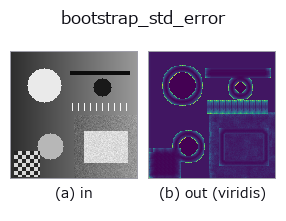

texture op• Data kinds: image → image
• Call: fullseye.apply(img, "bootstrap_std_error", a=0.5, b=0.5) (the 2-D model is one image plus two scalar knobs a,b∈[0,1])

*The figure is the actual output on a synthetic 128×128 input. Left: input, right: output. Point clouds are drawn as a top-down scatter (brightness = z), 1-D series as a line plot, volumes as the maximum-intensity projection along z, videos as the middle frame, complex images as magnitude; return values that are not pictures are shown as the values themselves.*
*The output is shown in a viridis-like pseudo-colour (dark purple = low, yellow = high) so that a field of quantities — distance, phase, orientation, depth — can be read.*
Sweeping knob a (0.1 / 0.5 / 0.9, the other knob at its default):
▸ bootstrap_std_error: knob a sweep (docs site)
Sweeping knob b (0.1 / 0.5 / 0.9, the other knob at its default):
▸ bootstrap_std_error: knob b sweep (docs site)
On other images (synthetic scene / photo / coins. Top row: inputs, bottom row: their outputs. Knobs at default):
▸ bootstrap_std_error: other inputs (docs site)
*The 4th column is a colour (H,W,3) input. This op handles colour without crossing channels (it does not convolve the colour channel as a third spatial axis).*
Measures the standard error of the local standard deviation without assuming a distribution (bootstrap).
The error 1/sqrt(2(n-1)) that local_std reports alongside rests on the assumption that the noise is normally distributed. With outliers or bimodality, that formula understates the true spread. Here the values in the window are resampled from themselves with replacement to rebuild the statistic, and the scatter itself is taken as the error — no assumption is needed; instead it is paid for with computation.
a is the window (3-9 pixels), b the number of resamples (8-64). The output is the standard error relative to the standard deviation in the window (relative); 1.0 means "it wobbles by 100 %".
How to read it: read it as a ratio between locations, not as an absolute value. Applied to normally distributed white noise it comes out lower than the closed form 1/sqrt(2(n-1)) (the bootstrap understates the spread of the standard deviation on small samples). Measured (b=1.0, 64 resamples):
window 3x3 (n=9) measured 0.216 / closed form 0.250 = 0.86
window 5x5 (n=25) measured 0.133 / closed form 0.144 = 0.92
window 7x7 (n=49) measured 0.096 / closed form 0.102 = 0.94
window 9x9 (n=81) measured 0.076 / closed form 0.079 = 0.96
So the larger the window, the closer it gets. What to look for is "where it is higher than its surroundings":
there the distribution departs from normal (scratches, outliers, the boundary between two materials). In an image with 2 % outliers mixed in, the median jumps to 1.8 times the closed form, clearly separated from the normal case (around 0.9 times) — this difference is where it is useful. Put it next to local_std to see "the size of the spread" and "how untrustworthy that number is" at the same time.
Conditions of use: (1) With a small window the bootstrap itself wobbles and, as above, comes out systematically low. (2) Increasing the number of resamples (b) makes the map smoother, but does not lower the true error. (3) The seed is fixed to make it deterministic — the same input always returns the same output. (4) It is an op that pays for an assumption with computation, so it is slow: measured 128x128 takes 0.26 s and 256x256 takes 1.27 s (b=1.0, 64 times). Where the closed form suffices, use the error bound of local_std — this op is the tool for when you want to check "whether that closed form can be trusted".
• gallery2d_texture_freq family guide
• Sample-data catalog (download URLs / licences) — 2-D uses skimage.data (BSD/public domain) plus synthetic images; 3-D lists download URLs for real data sources (Stanford, PDS, …).
• Operator provenance and references — the sources of the research/methods this op family came from.
• The canonical algorithm (author, year) and its uses are named in the family usage guide above.
The program below has been verified to run (same input as the figure). In Studio's help this block becomes buttons that load and run it on the spot.
bootstrap_std_error 0.50 0.50
▸ Load this pipeline · Load & run
• gallery2d_texture_freq — py -3.11 examples/gallery2d_texture_freq.py
image as input)identity · gaussian · mean_box · bilateral · unsharp · median · min_filter · max_filter
texture)std_filter · local_bimodality · local_std · scale_select_std · structure_tensor_orientation · structure_tensor_coherence · gabor · sk_frangi
*Provenance: ops.py — 2D operator registry. This per-op note is generated by tools/opdocs.py md (do not hand-edit).*
© 2026 Kazufumi Furuse — Fullseye operator documentation. Licensed under Apache-2.0.